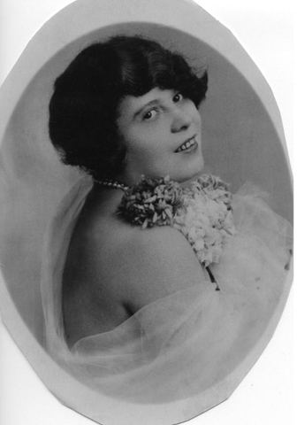
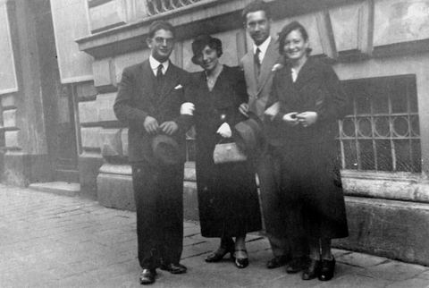
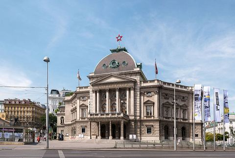
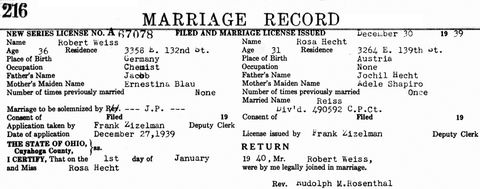
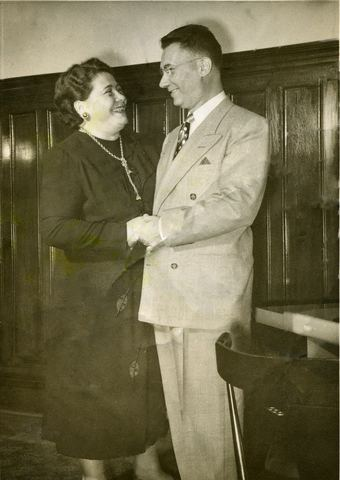

Robert Weiss
1903–1993
Life Story
Robert Weiss was born in Carlsbad, Austria-Hungary (now Karlovy Vary, Czech Republic). He was the son of Jakab Weisz, the internationally renowned Chief Cantor of The Great Synagogue in Carlsbad, one of the largest in the region and regularly accommodated between 1200-2000 people. When Robert was 11 and Jakab was 42, WWI broke out. Jakab was forced to leave his wife, Robert and two younger daughters behind to join the Austria-Hungarian Army as a foot soldier. His unit was quickly captured; a few months later, he died of typhus in a Serbian POW camp.
In 1915, a year after losing his father, his mother moved the family back to her hometown of Vienna where she rejoined her parents, five brothers and large, extended family. They lived on her small widow’s pension from the Carlsbad Synagogue. By the age of 12, Robert playing the piano in movie theaters during silent films to help support his mother and sisters.
From 1916 to 1922, between the ages of 13 and 18, Robert attended Vienna’s Gymnasium Kundmanngasse, a prestigious science school. After matriculating to the University of Vienna, he studied chemistry and did three years of laboratory research under Professor Wolfgang Josef Pauli, a pioneer of colloid and protein chemistry. Robert earned his doctorate in protein chemistry in 1931.
Astoundingly, Robert simultaneously attended Vienna’s Academy of Music and Performing Arts studying the organ, music theory, composition, and conducting; he graduated with honors in 1933. He was an operatic coach at the Music Academy, and a composer, accompanist, choral and orchestral conductor in Vienna’s Jewish community. He was also a private teacher of piano, harmony, composition and vocals. During this time, he was close friends with Sigmund Freud's daughter-in-law, Estee Freud. They hosted salons where she’d recite poetry and he'd play the piano
He met his future wife, Rose Hecht, in the standing room only section of Vienna’s Volkstheatre during the play "Die unentschuldigt Stunde".
In 1939 he came to the US where he was engaged in similar posts in various cities for conservative synagogues. 1957-1967 he was with Temple Emanuel in Newton, MA as organist; in 1967 he joined Temple Mishkan Tefillah first as the organist; then also as the choir director.
Life events
| Born | |
|---|---|
| Hebrew Name | 30 Oct 1903 · Reuven bar Yakkov |
| Education | Sep 1916 - 7 Jul 1922 · Gymnasium Kundmanngasse, 1030 Kundmanngasse 20–22, Vienna, Austria Map · A prestigious, science school |
| Lived | |
| Graduated | Nov 1931 · University of Vienna, Vienna, Austria Map · Doctorate in protein chemistry |
| Lived | |
| Occupation | 1932 - 1939 · Stadttempel, 1010, Seitenstettengasse 4, Vienna, Austria Map · Choral conductor, organist at Vienna’s main Synagogue, City Temple. |
| Graduated | Jun 1933 · Acadamy for Music and Performing Arts, Vienna, Austria Map · With honors with a degree in conducting. |
| Occupation | 1934 - 1938 · Fünfhaus Synagogue Turnertempel, 1150 Turnergasse 22, Vienna, Austria Map · Choral conductor |
| Nazi Persecution | 1938 - 1939 · 1060 Fillgradergasse 15, Apt 5, Vienna, Austria Map |
| Departure | 16 Apr 1939 · Netherlands Map · S. S. Ilsenstein |
| Arrival | 27 Apr 1939 · Manhattan, New York Map · S. S. Ilsenstein |
| Married | 1 Jan 1940 · Rose Hecht · Cleveland, Ohio Map  |
| Lived | 1 Apr 1940 · 3264 East 139th St, Cleveland, Ohio Map · Married Relation to Head of House: Head |
| Lived | 16 Feb 1942 · Akron, Ohio Map |
| Lived | 1943 - 1950 · 130 Earley St., Rhode Island Map · Relation to Head: Head; Marital Status: Married |
| Naturalized | 4 Dec 1944 · Providence, Rhode Island Map |
| Lived | 1950 - 1951 · Fairfield Garden Apartments, Watertown, Massachusetts Map |
| Lived | 1952 - 1953 · 16 Gibbs St., Brookline, Massachusetts Map |
| Lived | 1954 - 1977 · 77 Rawson Rd, Brookline, Massachusetts Map |
| Lived | 1977 - 1984 · 2900 NW 47th Terrace, Lauderdale Lakes, Florida Map |
| Lived | 1984 - 1993 · Pompano Beach, Florida Map |
| Married | 14 Jun 1984 · Broward, Florida Map |
| Died | 20 Mar 1993 · Pompano Beach, Florida Map · Age: 89 |
| Buried | 22 Mar 1993 · Pompano Beach, Florida Map · Forest Lawn Memorial Gardens  |
Family

Photos
Robert Weiss
Ernestine Blau

Anna Maria Schepan
Teresa Feldman
Josef Blau
Betti Borbola Fuchs
Samuel Blau
Ilonka 'Helen' Blau
+15 more

Hildegard 'Hilde' E Weiss
Edith Weiss
Robert Weiss
Ernestine Blau

Hildegard 'Hilde' E Weiss
Robert Weiss
Ernestine Blau

Robert Weiss
Scheindel 'Charlotte' Klinghoffer
Josef 'Joshi' Blau
Robert Weiss

Robert Weiss
Robert Weiss

Robert Weiss
Robert Weiss
Robert Weiss
Robert Weiss

Robert Weiss
Robert Weiss
Robert Weiss

Robert Weiss

Robert Weiss

Robert Weiss

Robert Weiss
Rose Hecht
Robert Weiss
Robert Weiss
Rose Hecht
Jochil Hecht
Robert Weiss
Rose Hecht

Robert Weiss
Rose Hecht
Robert Weiss
Robert Weiss

Robert Weiss

Robert Weiss
Robert Weiss
Rose Hecht

Robert Weiss

Robert Weiss
Robert Weiss